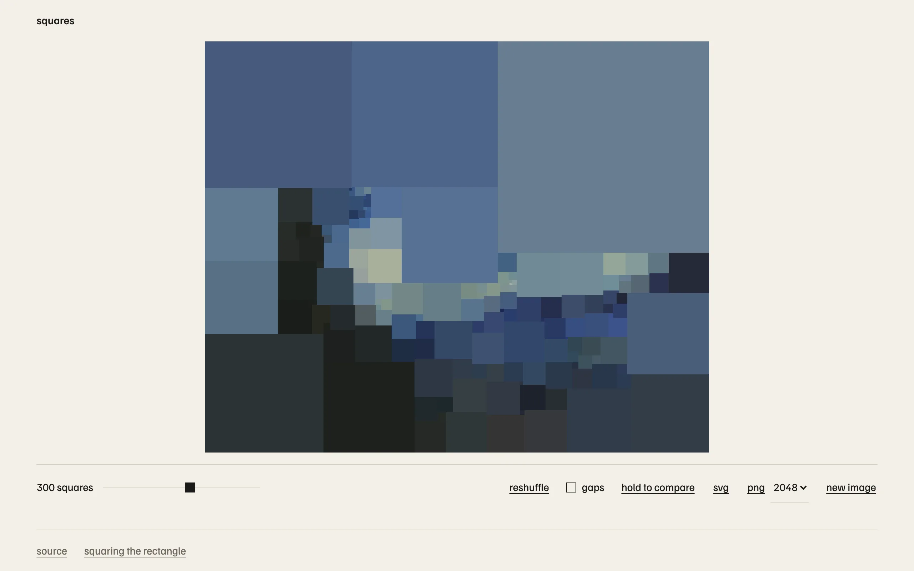

A squared rectangle is a rectangle tiled by squares. In 1925 Zbigniew Moroń found one made of nine squares, 32 wide and 33 tall, with sides 15, 8, 9, 7, 1, 10, 18, 4 and 14. I wanted to drop a photo on a page and get it back as one of these, with each square coloured by the picture underneath. The catch is that you cannot choose the square sizes. You can only choose how they connect, and the sizes follow.
Squares are wires
That is the 1940 observation of Brooks, Smith, Stone and Tutte. Take every maximal horizontal segment in the tiling and call it a node. Every square is a wire of one ohm running from the segment along its top to the segment along its bottom. Put the top edge of the rectangle at potential 0 and the bottom edge at potential 1. Then the current through a wire is the side of its square, and Kirchhoff's two laws are exactly the two things a tiling has to satisfy. Current is conserved at a node because the squares resting on a segment from above are as wide, in total, as the squares hanging from it below. The voltage drop across a wire equals its current because a square is as tall as it is wide. So once the network is fixed, the sizes are the unique solution of a linear system. The width of the rectangle is the total current, and it is not chosen either. For Moroń's tiling it comes out as 32/33, and one of my tests checks that to nine decimal places.
I store the network as a planar map in half-edge form, with one extra edge joining the top node to the bottom node so the whole thing closes up into a sphere. The potentials come from conjugate gradients with a Jacobi preconditioner, run to a residual of 1e-12. Every move in the search changes the map by one edge, so I warm start the solver from the previous potentials, and a node created by splitting inherits its parent's value. Laying the squares out afterwards is a sweep: sort the nodes by potential, and at each one place its downward squares left to right in the clockwise order the map already stores.
What simple buys
A squared rectangle is called simple when no group of two or more squares forms a smaller rectangle inside it. Brooks, Smith, Stone and Tutte showed that this corresponds to the network being 3-connected: you cannot disconnect it by removing two nodes. I keep the map polyhedral throughout, meaning 3-connected, no parallel edges, every face a simple cycle, and any two faces sharing at most one edge. The payoff is that the search only ever proposes tilings where the picture is one thing, never a tiling of tilings.
There are four moves. Inserting an edge across a face adds a square and raises the conductance between the poles, which widens the rectangle. Splitting a node adds a square and lowers it, which narrows the rectangle. Deleting or contracting an edge removes a square. The two growth moves keep 3-connectivity automatically. The two shrink moves can break it, so I apply them to a copy and check the faces around the change. One test grows random maps for a while, then tries every possible shrink and confirms, by brute force removal of every pair of nodes, that each refused move really would have broken the map.
The invariants test takes 40 seeds, applies 30 growth moves and 25 shrink moves to each, and after every move asserts Euler's formula, brute-force 3-connectivity, that the squares' areas sum to the rectangle, that no two overlap, that no four squares meet at a point, and, for tilings of at most 40 squares, that a brute-force search finds no sub-rectangle. It has to get through more than 1,500 configurations before it passes.
Four squares meeting at a corner is the one thing the map cannot represent, because two distinct nodes would sit at the same potential and touch end to end. The layout refuses those with a tolerance of 1e-7 in tiling units. In practice the thing that happens far more often is a sliver: a square thinner than three quarters of a target pixel. A sliver is a cross in the making, and removing it barely moves anything else, so the evaluator contracts or deletes its edge and solves again rather than throwing the candidate away.
Matching the photo
The photo is scaled to at most 1024 pixels on its long side and converted to Oklab, then stored as summed-area tables of the values and their squares, quantised to 16 bits. The mean colour under any square, and the total squared deviation from that mean, are then a handful of lookups. The cost of a tiling is the summed deviation over all squares divided by the pixel count, plus a penalty when the rectangle's aspect ratio would crop more than 3 percent of the photo, plus a penalty for squares under 3 pixels wide.
The search runs in three stages. Seeding starts from Moroń's nine squares and grows at random, preferring the widening or narrowing move, until the aspect ratio lands inside the 3 percent band. Growing adds one square at a time up to the count on the slider, 40 to 1,500 with 300 as the default. Each step picks an edge with probability proportional to its error, tries three candidate moves nearby, and keeps the cheapest. Refining is a compound move: remove one square, preferring thin ones, then add one near a high-error square, and accept or reject by the Metropolis rule. The temperature is 0.3 of the mean per-square error and is meant to fall to 0.005 over 4,000 steps.
Meant to. In the browser I run refinement on a four second budget rather than a step count, and I did that by setting the step count to an enormous number. The schedule reads its progress from that count, so on the site the temperature never falls. It is a fixed-temperature walk, not annealing. It still improves the picture. The bug is still there. The other admission is that every one of those constants was tuned by looking at results. There is no measurement of solution quality anywhere in the repo.
The core is Rust compiled to WebAssembly and runs in a Web Worker in 14 ms slices, posting a snapshot to the page every 60 ms so the squares can be watched settling. Nothing is uploaded. The tiling exports as SVG or PNG at 1024, 2048 or 4096 pixels.